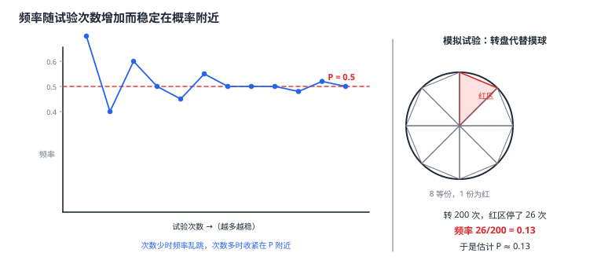

用频率估计概率
有些概率没法直接数出来——「雨会不会下」「某路口一天会经过多少辆车」「抽奖抽到一等奖吗」，这些要么结果无穷多，要么无法预先列举。但它们可以重复试验：掷硬币、抛石子、转动转盘、抽取样品。大量重复试验会发现一个规律：事件 A 发生的频率总在某个常数附近徘徊，试验次数越多，徘徊得越紧，这个常数就是 P(A)。于是「用频率估计概率」成为一条通道：做 n 次试验，算出频率 m/n，用它作为概率的估计值。这是模拟试验（如用随机数代替实物）能算出「本该算不出」的题的原因，也是「多跑几次就好了」的数学依据。
| 所属主题 | 概率 |
|---|---|
| 所属模块 | 统计与概率 |
| 课标学段 | 第四学段（7~9 年级） |
| 前置知识 | 事件的概率、用样本估计总体、求概率的方法、数据的收集 |
| 核心素养 | 数据观念应用意识推理能力 |
教材定位
人民教育出版社《人教版（2024版）义务教育教科书·数学》
九年级下册第34章 随机事件的概率34.3 用频率估计概率
对应九下 34.3 用频率估计概率：大量重复试验与模拟试验。
说明
先看现象。重复抛一枚均匀硬币 10 次，正面出现的次数可能是 6 次（频率 0.6），也可能只有 3 次（频率 0.3）——次数少时频率忽高忽低，波动很大。把试验次数加到 100 次，正面次数在 40 到 60 之间；加到 1000 次，正面次数落在 470 到 530 之间。次数越多，频率越稳定地落在 0.5 附近——这个 0.5 就是正面朝上的概率。
频率稳定性的规律：随着试验次数的增加，事件 A 发生的频率总在 P(A) 附近波动，且波动幅度随次数增大而减小。这个规律说明两件事：一是概率是可以通过试验认识的（频率是概率的可见形式）；二是不能用少量试验的结果下结论——只抛 10 次硬币得出「正面概率是 0.6」是典型的以偏概全。
用频率估计概率的做法：做 n 次重复试验，统计事件 A 发生了 m 次，用频率 m/n 作为 P(A) 的估计值。估计值与真值之间有误差，试验次数越多误差越小。要让估计比较可靠，试验次数应当足够多；但次数多也意味着成本高，所以同样存在精度与成本的权衡。
模拟试验让「本来算不出的题」变得可算：用转盘、骰子、硬币或随机数代替无法重复的实际过程。例如「掷一枚不均匀的骰子，6 点朝上的概率是多少」——不均匀的骰子无法用公式算，但可以掷 1000 次统计 6 点出现的次数，用频率估计它的概率。模拟的前提是模拟物与被模拟对象有相同的等可能结构（如用均匀转盘模拟袋中随机摸球），结构不同则模拟无效。
这条规律与统计里的「用样本估计总体」是同一个数学思想：都是用可重复的小规模现象去推断不可直接观测的量。前者推断的是概率（事件发生的可能性），后者推断的是数量（总体的平均数或比例）。共同的前提都是「随机」——只有每次试验的机制相同、机会均等，频率才会稳定在某个真值附近。
使用场景
产品质量抽检的破坏性试验：灯泡寿命一次试验就报废，试十次就报废十个，用不起；改用「抽取样品、只检验外观与部分指标」等不破坏主体的方式，或用小样本加统计推断来估计整批质量。
交通与天气的规律摸索：一个路口一天经过多少辆车、一周内有几天下雨，无法用公式算出，却可以靠长期记录频率来估计，并据此安排信号灯配时或出行计划。
注意点
试验次数不能太少。用 10 次试验的频率估计概率，误差可能高达 ± 0.1 以上；要做有说服力的估计，一般要上百次乃至上千次。题目问「需要做多少次试验才能使频率稳定在概率附近」时，答案通常是「越多越好」，而不是某个具体数字。
每次试验的条件必须相同。掷硬币时不能前几次用左手后几次用右手、不能换不同硬币、不能让硬币立在桌上——试验机制一变，频率稳定的那个常数也会变，之前的记录作废。
模拟试验代替实物时，必须保证等可能结构相同。用均匀转盘模拟「袋中随机摸一个球」可以；用一个灌了铅的骰子去模拟另一个灌了铅的骰子，两者结构不同，模拟结果没有意义。
频率只是估计值，写答案时不能把它当成精确概率。题目问「估计概率」时写「约为」，与统计里的「估计总体平均数」是同样的规矩（用样本估计总体）。
证明

图 1：左——试验次数少时频率乱跳，次数多时频率收紧在概率附近；右——用模拟试验的频率给概率一个估计值
证明
结论 1试验次数越多，频率 m/n 越稳定、越贴住 P(A)：频率是试验次数多起来以后的稳定值，概率是这个稳定值的理论刻画。
把试验次数记作 n，事件 A 发生的次数记作 m，频率是 m/n。在每次试验机会均等的前提下，做的次数越多，m 与 nP(A) 的比例关系越稳定——这就是大量重复试验中频率所呈现的规律：它不是一开始就准，而是随着 n 增大逐渐收紧到 P(A) 附近。频率是试验做多了以后才显出来的稳定值，概率则是对这个稳定值的理论刻画。
关键一步依据是「频率的稳定性」这一事实本身：等可能的试验重复足够多次后，频率会稳定在概率附近；试验次数少的时候，这个稳定过程还没完成，所以频率波动大。频率趋稳靠的是试验次数多，而不是某一次试验运气好。
结论 2试验次数太少时不能下结论：掷 10 次硬币出现 6 次正面看着「偏差很大」，其实很正常；掷 1000 次时正面比例就几乎锁定在 0.5 附近。
掷一枚均匀硬币，每次正面朝上的机会都是 \dfrac12。掷 10 次，正面出现 6 次，频率是 0.6，看上去比 0.5 差了不少——但试验只有 10 次，正面出现 5 次、6 次、4 次、7 次都完全可能，这种上下摆动属于小样本的正常波动。掷 1000 次时，正面次数的比例就几乎锁定在 0.5 附近，频率稳定在概率上。「以偏概全」的错误，根源就是拿 n 很小时的频率当成了真值。
关键一步依据是「频率随试验次数增多而稳定」这一条：n=10 时样本太小，频率在 0.5 上下摆动是正常的；n=1000 时样本足够大，频率才几乎锁定在 0.5 附近。能不能下结论，取决于试验次数够不够，而不是某一次结果好不好看。
结论 3模拟试验能代替被模拟对象，前提是模拟物与被模拟对象有相同的等可能结构。
模拟物的每一次转动（或每一次抽取）与被模拟对象的一次试验有相同的等可能结构，于是模拟出的频率也稳定在同一个常数附近，这个常数就是被模拟对象的概率。有效的模拟必须保证「等可能结构相同」这一条——若模拟物本身不均匀，得到的频率稳定在模拟物的参数上，与被模拟对象无关。
关键一步依据是「频率稳定在哪个常数上，由试验机制决定」：模拟物的每一次转动（或每一次抽取）与被模拟对象的一次试验有相同的等可能结构，模拟出的频率才稳定在同一个常数附近，而这个常数就是被模拟对象的概率。有效的模拟必须保证「等可能结构相同」这一条——若模拟物本身不均匀，得到的频率稳定在模拟物的参数上，与被模拟对象无关。
结论 4每一次试验的条件必须相同：只有整批试验的机制一致，频率才会稳定在同一个常数附近。
频率之所以稳定在某个常数附近，前提是这个常数在整批试验中保持不变。若试验机制中途改变（比如换了骰子、改变了投掷方式），那么前半程与后半程的试验其实来自两个不同的模型，各自稳定在自己的常数上，混在一起计算的频率既不靠近前者的概率，也不靠近后者的。一致性是「频率稳定」这个现象能成立的前提。
关键一步依据是「频率稳定」这句话的前提本身：稳定意味着整批试验都服从同一个模型，那个被稳定的常数才可能前后一致。若试验机制中途改变（比如换了骰子、改变了投掷方式），前半程与后半程就是两个不同的模型，各自稳定在自己的常数上，混算的频率自然既不靠近前者的概率也不靠近后者的。一致性是「频率稳定」这个现象能成立的前提。
动手实验
用一枚硬币做一次「频率逼近概率」的完整实验：把抛的次数分成 10、100、1000 三档，每到一档就记一次累计正面频率。你会看到 10 次时数字在 0.3 到 0.7 之间乱跳，100 次时落在 0.45 到 0.55，1000 次时几乎不动了。更有意思的是换一个做法：把 1000 次实验分成 10 组各 100 次，先算每组的频率（波动很大），再看 10 个组频率的平均（立刻接近 0.5）——同一个总量的两种算法，稳定性差得远，这说明「取平均」本身就是一种减小波动的手段，也正是样本平均数能估计总体平均数的微观原因。
解题思路
用频率估计概率四步：① 明确要估计的事件与试验方案（试验物、次数、每次是否条件相同）；② 做完 n 次试验并记录结果；③ 统计事件 A 发生的次数 m，算频率 m/n；④ 写「P(A)\approxm/n」，并说明试验次数越多估计越可靠。
设计模拟试验三问：① 被模拟对象与模拟物是否等可能结构相同？② 每次试验的条件是否完全一致？③ 试验次数是否足够多？三个问题有一个答不上来，模拟结果就不可用。
用数据作判断两问：① 算出的频率与理论值差多少？② 这个差距是随次数增加而缩小，还是始终存在？前者是偶然波动（可接受），后者提示有系统性问题（要改方案）。
按场景的例题
例 1（场景：竞技与游戏） 从频率数据看概率
做掷一枚均匀硬币的试验，记录正面朝上的次数：抛 10 次正面 6 次，抛 100 次累计正面 52 次，抛 1000 次累计正面 496 次。求这三次试验的正面频率，并说明由这些数据能得到什么结论。
解：三次的正面频率分别是：10 次时 6/10=0.6；100 次时 52/100=0.52；1000 次时 496/1000=0.496。可以看出随着试验次数增加，频率从 0.6 一路向 0.5 靠拢，波动越来越小。结论是：正面朝上的概率是 0.5，而 1000 次试验给出的估计值 0.496 比 10 次时的 0.6 可靠得多。同时要注意，不能因为某一次 10 次试验出现了 0.6 就断言「正面概率是 0.6」——那只是偶然波动，不是规律。
答：三次频率依次为 0.6、0.52、0.496；正面概率为 0.5，试验次数越多估计越准确。
例 2（场景：数据调查） 用模拟试验估计概率
一个不透明的袋子里装着若干红球和白球，其中红球占全体的八分之一。现用转盘模拟随机摸球：把转盘分成 8 等份，其中 1 份涂红，每次转动转盘停在红区就算摸到红球。转动 200 次，红区共停了 26 次。求这次模拟给出的红球概率估计值，并说明这个估计为什么可信。
解：频率为 26/200=0.13，即估计摸到红球的概率约为 0.13。这个估计之所以可信，有两条理由：一是模拟有效——转盘分成 8 等份、每次转动停在某一扇区的机会均等，与在袋中随机摸一个球（每个球机会均等）等可能结构相同，模拟出的频率稳定的就是红球所占的比例；二是次数足够——200 次试验的偶然波动已经不大，频率通常只在真值上下三四个百分点内晃动，估计值与真值的差距大致这个量级。实际结论应写成「摸到红球的概率约为 0.13」，而不是精确的 1/8=0.125。
答：红球概率的估计值约为 0.13；模拟有效（等可能结构相同）且试验次数足够多，故估计可信。
例 3（场景：方案选择） 为估计概率设计试验方案
某班级想估计「抛一枚均匀硬币正面朝上的概率」，有三种方案：甲方案抛 10 次记录频率；乙方案抛 200 次记录频率；丙方案抛 100 次，每次抛完换一个不同的硬币（保证每次硬币不同但都是均匀的）。请评价三个方案。
解：甲方案不可取：10 次试验的偶然波动很大（频率在 0.5 附近可有约 ± 0.16 的摆动），频率可能是 0.3 也可能是 0.7，据此估计概率会严重失真。乙方案可取：200 次试验的波动幅度约为 \dfrac0.5\sqrt200\approx 0.035，频率已经相当接近 0.5，是三个方案中最可靠的。丙方案可取但要说明理由：每次换一枚不同的均匀硬币，随机性没有被破坏（每枚硬币各自都是均匀的），因此频率依然会稳定在 0.5 附近；它还有一个额外的好处——排除了「同一枚硬币可能有固定偏差」这类隐患。若换成「每次换一枚不均匀的硬币」，结论就不成立，因为等可能结构被破坏了。
答：甲不可取（次数太少波动大）；乙最可靠；丙可行（每次都是均匀硬币则随机性未破坏），但次数少于乙。
常用推论
「频率估计概率」与「样本估计总体」是同一个数学内核的两次运用：用可重复的抽样去推断看不见的总体规律，靠的都是随机性保证无偏、重复次数保证波动小这一对条件。统计与概率在这里合流——一个估计数量，一个估计可能性，但支撑它们的数学结构完全一致。
这条规律的实践意义在于它给了「多测几次」一个数学依据。日常经验里「多试几次就不奇怪了」，在概率论里有精确的解释：波动的幅度按 \dfrac1\sqrtn 缩小，所以次数翻四倍，误差只减一半——想再精确一点，代价是成倍增加。任何「多跑几次」的朴素做法背后，都有这条可计算的规律在支撑。
「频率稳定在概率附近」还划出了臆测与规律的界线：说「这枚硬币偏正面」之前，先问做了多少次试验。若只抛了 10 次就有结论，那不是在描述规律，而是在描述偶然。判断一个结论是规律还是偶然，方法只有一个：把试验次数加上去再看。
易错点
错「抛一枚硬币 10 次，正面出现了 6 次，所以正面朝上的概率是 0.6。」
为什么错用少量试验的频率当成了概率。10 次试验的频率波动很大，0.6 完全可能只是偶然；理论值是 0.5，而且多抛几次就能看到频率自己回落。
正确结论应是「正面概率约为 0.5」；由 10 次试验只能得到「0.6 这个估计很不准」，要提高精度必须增加试验次数。
错「为了估计摸到红球的概率，我先摸 10 次，其中 2 次是红球，于是概率是 2/10=0.2。」
为什么错结论本身没错（这是个估计），错在没有交代估计的不确定性。10 次试验的频率波动很大，0.2 与真值可能相差很远；读者会以为这是精确结论。另外摸球时若每次不放回还要注意这一点——摸出后放回，试验才相互独立。
正确写成「估计摸到红球的概率约为 0.2（仅由 10 次试验得到，误差较大）」，并说明增加试验次数可提高精度。
错「用一枚灌了铅的骰子模拟另一枚灌了铅的骰子，转 1000 次统计 6 点出现的频率，得到的频率就是那枚骰子 6 点的概率。」
为什么错模拟的前提被破坏了。被模拟的那枚骰子本身不等可能，模拟用的骰子灌铅程度若与它不同，两者的 6 点概率并不相同；若灌铅程度相同，则这个模拟反而是可以的——问题不在「灌铅」，而在两枚骰子的「不等可能结构」是否一致。
正确模拟有效的条件是：模拟物与被模拟对象有相同的等可能（或不等可能）结构。结构一致时模拟才有意义，与「均不均匀」无关。
直观理解
频率估计概率，像往平静的湖面反复扔石子，看波纹最后稳定在什么位置。石子扔得越多，水面越平，那个「中心位置」就是概率（图 1 左）。这件事妙在它把一个看不见的量变成了看得见的记录：概率是湖底的深度，频率是水面的波纹——波纹乱跳的时候你只能猜，扔得够多了，波纹自己会告诉你答案。而这与统计里的抽样推断是同一幅画面：样本是石子，总体是湖底。